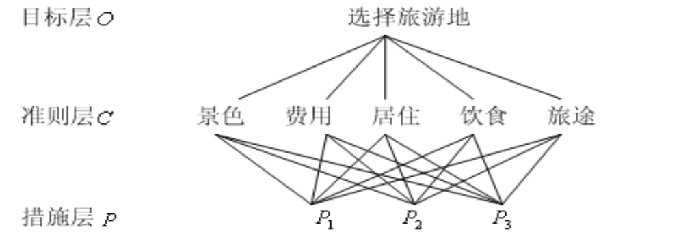

centos7.0安装配置，cuda,cudnn安装，anaconda安装，深度学习框架caffe,torch,theano,tensorflow安装
0.介绍
深度学习在linux上面会比windows上面方便很多，在windows上那叫个折腾。本文将会介绍centos7.0 的
安装，cuda和cudnn的安装，anaconda安装，以及各种深度学习框架的安装。
深度学习是计算密集型任务，不推荐在虚拟机中运行，装cuda和cudnn需要有nvidia显卡。
本文默认在root下运行所有命令
1. 安装系统
建议不要使用最小安装，否则很多工具需要自己再次安装比较麻烦。
分区：自己分区，选择硬盘(比如sdb), 分区表如下

选择了需要安装的软件后不停下一步就可以安装完毕。
安装完成后，添加源 yum install epel-release,这个源包含了很多base源没有的软件包，非常实用
2. 配置网络
centos 默认是没有联网的，如果系统没有安装图像界面如gnome或者kde等，需要在命令行配置如下
2.1 修改ip和网关
vim /etc/sysconfig/network-scripts/ifcfg-enp5s0 #enp5s0是网卡对应名称，使用`ifconfig`查看自己机器的网卡名称，然后修改对应文件
8. 层次分析法
适用于难以完全定量分析、互相关联制约的众多因素构成的复杂系统。示例：考虑景色、费用等因素选择旅游地；考虑待遇、发展前途、地理位置选择工作。
8.1 基本原理和步骤
i. 建立递阶层次结构模型： 目标层O(预定目标)、准则层C（需要考虑的因素、准则）、措施层P（可能的选择）
ii. 构造各层判断矩阵： 比较n个因子\(X=\{x_1,x_2,...,x_n\}\)对某因素\(Z\)的影响大小，构造\(Z-X\)判断矩阵\(A = (a_{ij})m\times n \), \(a_{ij}\)表示\(x_i\)和\(x_j\)对Z影响大小之比。\(a_{i,j}\)一般取\(1,2,3,...9,1/9,1/8,...1\), \(a_{ij}=1/a_{ji}\)。 计算A需要作出\(\frac{n(n-1)}{2}\)此判断以得到更多比较。
iii. 层次单排序及一致性检验：计算A最大特征值\(\lambda_m\)特征向量\(W\),归一化以后即因子X对上一层因素Z的重要性排序权值(层次单排序)。矩阵A难免一定程度不一致，需要进行一致性检验决定是否接受A。
iiii. 层次总排序及一致性检验： 层B的层次单排序结合上一层的总排序得出层B的层次总排序。

8.2 思考问题
判断矩阵不一致怎么修正？
paper: 修正AHP中判断矩阵一致性的加速遗传算法
mcm 日志
8.16~8.27 学习主要建模方法
https://pan.baidu.com/s/1kUJ00uj
网盘里的往年资料是15年的一道题和它的两篇论文
下面的数字是模型与算法目录下的数学建模的32种方法。
看这些东西的时候务必做个笔记：简介、适用场景、大致流程。以便看完以后互相share
Double Jpeg detection with the same quantization matrix (Notes)
1. Introduction
介绍一下几篇论文中等质量双压缩检测的方法，备忘。State of the-art double jepg compression detection with the same quantization matrix.
2. Methods
2.1 Proposed by Fangjun et al.
Detecting Double JPEG Compression With the Same Quantization Matrix
2.1.1 jpeg压缩和解压缩过程导致的三种误差
i. 量化误差 压缩过程中，DCT系数量化导致的误差
ii. 截断误差 解压缩过程中，IDCT变换可能导致值在[0,255]之外，需要截断到0或者255
iii. 舍入误差 解压缩， IDCT变换得到的值为浮点数，需要舍入为最接近的整数
2.1.2 jpeg多重压缩统计特征
\(J_n\)代表压缩n次的Jpeg图片，\(D_n\)代表 \(J_n\)和\(J_{n+1}\)中JPEG系数（量化后的DCT系数）不一样的个数，\(S_n\)代表\(J_n\)中非0 JPEG系数的个数。
统计特征：随着n增加，\(D_n\)单调减小
Copyright © 2015 Powered by MWeb, Theme used GitHub CSS.